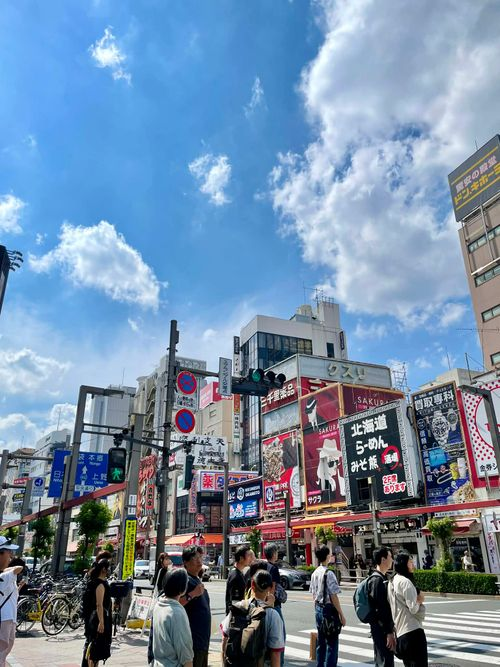
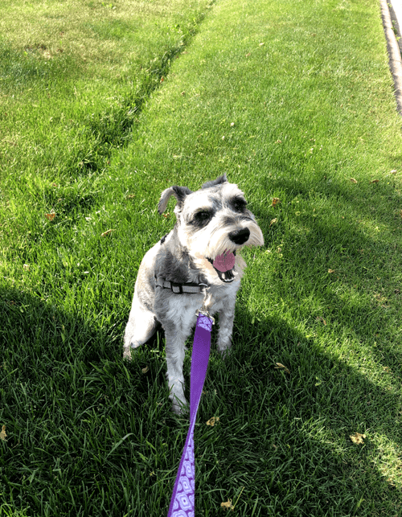
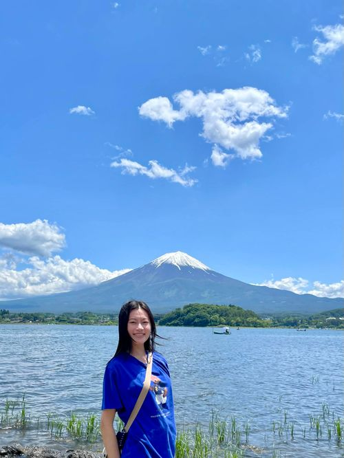
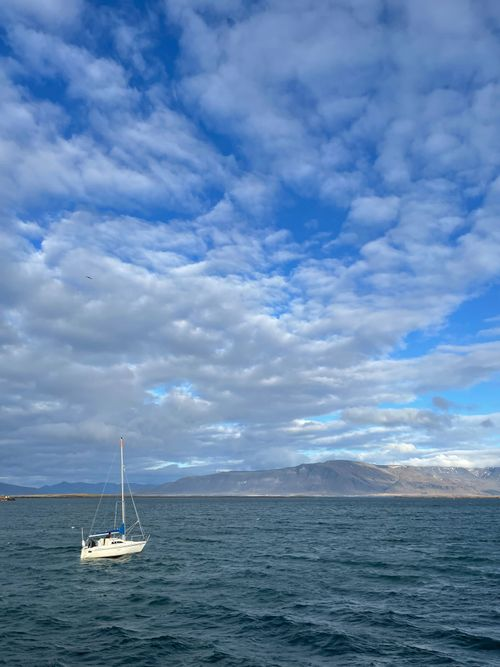

Dana • "Day-nuh"
I am a product designer with 4 years of experience delivering end-to-end UX/UI solutions for enterprise SaaS and client-facing platforms. My design specialty lies in design systems, accessibility (WCAG 2.0 AA), and AI-enabled rapid prototyping to accelerate feature validation and stakeholder alignment.
My design philosophy involves blending business strategies, accessibility, and a user-centric approach. I take the entire product lifecycle into consideration, ensuring a holistic perspective that enhances effective product development.

Taiwan
2026
Tokyo
2025
Penny

Mount Fuji
2024
Flower Farm
2024